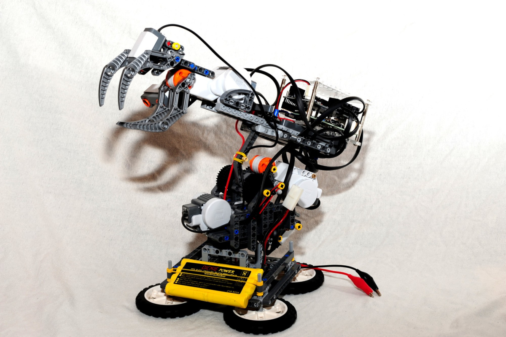

“Lego Roboter mit der Raspberry Pi zum Leben erwecken - mit BrickPi.” Das von Dexter Industries angebotene Erweiterungspaket erlaubt es eure Lego Mindstorms NXT oder EV3 Motoren und Sensoren über eine Raspberry zu steuern.
BrickPi
Um circa. 100€ ist die BrickPi Erweiterung für eure Raspberry Pi zu haben. Der Versand dauert ca. 1-2 Wochen (nach meiner Erfahrung). Wenn ihr schon einen Lego-Mindstorms NXT oder EV3 Baukasten Zuhause habt könnt ihr sofort loslegen.
Warum möchte man einen NXT oder EV3 durch eine Raspberry austauschen? - ganz klar: ihr könnt mit einer Raspberry noch einfacher, noch mehr aus euren Kreationen rausholen.
- Webserver / Services zum steuern eurer Roboter - kein Problem!
- Mehrere BrickPis, oder BrickPi mit NXT/RXC koppeln - kein Problem!
- Fernsteuerung über SSH/CLI - Check!
Roboter bauen, fertig LOS!
Auf der Lego Mindstorms Website findet ihr etliche Ideen und Bauanleitungen für Einsteiger, Fortgeschrittene bis zu “Extrem-Varianten” von DIJ-Robotern.
Ich habe mich dazu entschlossen einen Roboter Arm (“RobotARM”) zu bauen:

Für dieses Modell habe ich
- 3 NXT Motoren
- 1 Ultraschall Sensor
- 1 Berührungssensor
- 1 Farbsensor verwendet.
Die Motoren sind für die Horizontal- und Vertikalbewegung des Greifarmes, sowie für das Schließen bzw. Öffnen der “Zange” gedacht. Mit dem Ultraschall-Sensor wird die Distanz zum Objekt in der Zange bestimmt, der Farbsensor kann dazu verwendet werden um die Farbe des zu greifenden Objektes zu bestimmen. Ein Berührungssensor (Taster) verhindert, dass der Greifarm zu weit nach hinten kippt bzw. dessen Null-Position zu finden.
Treiber / Raspbian einrichten
Wenn man ein Set mit SD-Karte von Dexter Industries gekauft hat ist dieser Schritt nicht notwendig, da die vorbereitete Distribution bereits alle notwendigen Module beinhaltet.
Um eine Standard Raspbian Distribution für BrickPi vorzubereiten genügt es folgende Befehle auszuführen:
(Checkout des BrickPi-Projektes auf GitHub + Installations-Script ausführen)
git clone https://github.com/DexterInd/BrickPi.git
cd BrickPi/Setup_Files
sudo chmod +x install.sh
sudo ./install.sh
Programmierung
Es gibt vorbereitete Softwarebibliotheken für C, Python und Scratch.
Für die Software des “RobotARM” habe ich mich dazu entschieden, diesen in zu schreiben.
Als erstes müsst ihr die benötigten “Treiber” für euer Projekt auswählen:
git clone https://github.com/DexterInd/BrickPi.git
cp BrickPi/Software/BrickPi_C/Drivers/ RobotArm/ -r
cd RobotArm/
Die C-Bibliothek kommt in Form von zwei Dateien - “BrickPi.h” und “tick.h”
[mw@mwmaster RobotArm]$ ll
insgesamt 36K
drwxr-xr-x 2 mw mw 4,0K 22. Dez 16:51 ./
drwxr-xr-x 27 mw mw 4,0K 22. Dez 16:51 ../
-rw-r--r-- 1 mw mw 24K 22. Dez 16:51 BrickPi.h
-rw-r--r-- 1 mw mw 1,1K 22. Dez 16:51 tick.h
Diese müssen in euer Programm inkludiert werden.
Für die C-Bibliothek gibt es ein einfaches Beispiel, um sich mit der Funktionsweise der bereitgestellten API vertraut zu machen.
Euer Programm muss keiner bestimmen Form entsprechen, es sind jedoch einige Funktionsaufrufe in die BrickPi-Bibliothek (siehe BrickPi.h) notwendig, um die Hardware zu initialisieren.
Am besten man kapselt diese in Hilfsfunktionen, damit Program-Main übersichtlicher bleibt:
void SetUARTAtmegaPorts() {
//http://www.dexterindustries.com/forum/?topic=programming-in-c-2/#post-1078
BrickPi.Address[0] = 1; // UART AtMega 328P Address (needed by BrickPi)
BrickPi.Address[1] = 2; // UART AtMega 328P Address (needed by BrickPi)
}
void DeviceConfig() {
wiringPiSetup();
SetUARTAtmegaPorts();
BrickPi.MotorEnable[MOTOR_ROTATE] = TYPE_MOTOR_SPEED;
BrickPi.MotorEnable[MOTOR_TILT] = TYPE_MOTOR_SPEED;
BrickPi.MotorEnable[MOTOR_GRAB] = TYPE_MOTOR_SPEED;
BrickPi.Timeout = ROBOTARM_DEFAULT_TIMEOUT;
BrickPiSetTimeout();
BrickPi.SensorType[SENSOR_ULTRASONIC] = TYPE_SENSOR_ULTRASONIC_CONT;
BrickPi.SensorType[SENSOR_TOUCH] = TYPE_SENSOR_TOUCH;
BrickPi.SensorType[SENSOR_LIGHT] = TYPE_SENSOR_LIGHT_ON;
}
Damit bleibt die Hauptfunktion relativ gut lesbar:
int main(int argc, char *argv[]) {
printf(" - RobotARM -\n");
ClearTick();
int setupResult = BrickPiSetup();
if (setupResult) {
printf("ERROR! - failed to initialize BrickPi! (%d)\n", setupResult);
return setupResult;
}
DeviceConfig();
setupResult = BrickPiSetupSensors();
if (setupResult) {
printf("ERROR! - failed to setup sensors! (%d)\n", setupResult);
return setupResult;
}
printf(" robot starting...\n\n");
return RobotMain();
}
Den kompletten Sourcecode für den RobotARM könnt ihr hier beziehen.